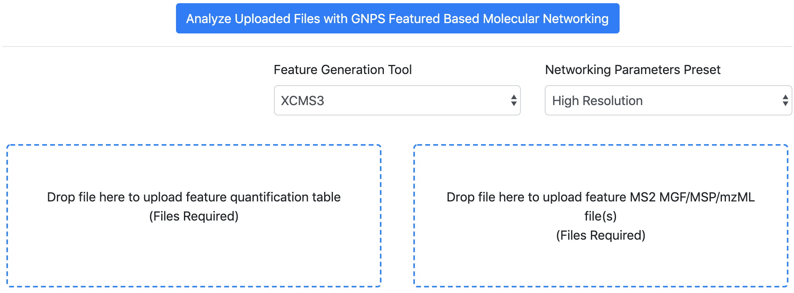

FBMN with XCMS
Introduction¶
The main documentation for Feature-Based Molecular Networking (FBMN) can be accessed here. See our preprint on bioaRxiv.
Below follows a description on how to use XCMS (ver. >= 3) with the FBMN workflow on GNPS.
Mass spectrometry processing with XCMS¶
Citations and development¶
This work builds on the efforts of our many colleagues, please cite their work:
Nothias, L.F. et al Feature-based Molecular Networking in the GNPS Analysis Environment bioRxiv 812404 (2019).
Wang, M. et al. Sharing and community curation of mass spectrometry data with Global Natural Products Social Molecular Networking. Nat. Biotechnol. 34, 828–837 (2016).
XCMS3 GitHub repository: https://github.com/sneumann/xcms
Tautenhahn R, Boettcher C, Neumann S. Highly sensitive feature detection for high resolution LC/MS BMC Bioinformatics, 9:504 (2008).
Smith, C.A., Want, E.J., O'Maille, G., Abagyan,R., Siuzdak, G. XCMS: Processing mass spectrometry data for metabolite profiling using nonlinear peak alignment, matching and identification. Analytical Chemistry, 78, 779–787 (2006).
Installation¶
1 - Install the latest version of XCMS3 from Bioconductor (ver. >= 3.4) in R with:
install("BiocManager")
BiocManager::install("xcms")
Alternatively, see the [xcms Bioconductor package] (https://www.bioconductor.org/packages/release/bioc/html/xcms.html).
2 - Retrieve the custom utility function from the XCMS-GNPS-TOOLS GitHub repository https://github.com/jorainer/xcms-gnps-tools.
Mass Spectrometry Data Processing with XCMS.¶
1. Introduction¶
Below we are presenting the key steps required to process with XCMS non-targeted LC-MS/MS data collected using data dependent acquisition. For more information on XCMS, consult these resources:
- The official XCMS
tutorial
(also provided as
xcmsvignette with thexcmsR package). - XCMS workshop from the Metabolomics 2018 conference: xcms-preprocessing and github repository.
- The Canadian Bioinformatics Workshop video on XCMS at https://www.youtube.com/watch?v=cdIb7EyIiBI
SCRIPT AVAILABILITY: Example of XCMS scripts are accessible as Jupyter notebook and RCommander script on https://github.com/DorresteinLaboratory/XCMS3_FeatureBasedMN.
IMPORTANT: XCMS parameters will vary depending on the mass spectrometer, the acquisition parameters, and the samples investigated. The following documentation serves as a basic guideline for using XCMS with the Feature-Based Molecular Networking workflow.
2. Convert your Data¶
XCMS accepts different input formats. Note that we recommand to convert your files to the mzML format before using XCMS for processing. See the documentation here. This will simplify the subsquent use of other mass spectrometry tools and data deposition on a public repository like MassIVE or MetaboLights.
3. Process with XCMS¶
These are typical steps used for the processing of non-targeted LC-MS/MS data with XCMS:
- Import data (
readMSData) - Peak picking (
findChromPeaks) - Retention time alignment (
adjustRtime). - Peak grouping (
groupChromPeaks). - Gap filling (
fillChromPeaks). - Run CAMERA for adduct annotation (
xsAnnotate). - Export the results file for FBMN on GNPS:
- Option A - Export a feature quantification table and a MS/MS spectral summary file:
- Export a feature quantification table with ion intensities (.TXT file format) (
writeMgfData). - Export a MS/MS spectral summary file (.MGF file format). Note that it is recommended to use the maxTIC option for the MGF export. (
write.table)
- Export a feature quantification table with ion intensities (.TXT file format) (
-
Option B - Export an mzTab-M file:
- Export and select the mzTab-M file in the interface. The use of the mzTab-M requires the subsequent upload of the mzML files used during the XCMS processing. See and cite this publication.
- Option A - Export a feature quantification table and a MS/MS spectral summary file:
Perform FBMN on GNPS¶
The files exported from XCMS3 can be uploaded to the GNPS web-platform and a Feature-Based Molecular Networking job can be launched.
FBMN with XCMS3 can be performed either using the [Superquick FBMN start page] (http://dorresteinappshub.ucsd.edu:5050/featurebasednetworking) or the standard interface of the FBMN workflow (you need to be logged in GNPS first).
More information on the Feature Based Molecular Networking workflow on GNPS can be obtained at this documentation page.
Note that you can upload a metadata table with your job. See documentation.

Representative results files and job¶
Option A - With a feature quantification table and a MS/MS spectral summary file:
- The feature quantification table (.TXT file) - Download here
- The MS/MS spectral summary (.MGF file) - Download here
- (Optional) The metadata table - Download here
Here is an example FBMN job with XCMS from a subset of the American Gut Project.
Option B - With a mzTab-M file:
TODO: Finish this section
- The mzTab-M file - Download here
- The corresponding mzML file(s) - Download here
Here is an example FBMN job with XCMS using a mzTab-M file and mzML files from a subset of the American Gut Project.
Tutorials¶
See our FBMN tutorial with XCMS using a subset of the American Gut Project samples on this repository DorresteinLaboratory/XCMS3_FeatureBasedMN/.
Acknowledgements¶
Johannes Rainer (Eurac Research), Madeleine Ernst (UCSD), Ricardo da Silva (UCSD), Michael Witting (Helmholtz Zentrum Munich)
Join the GNPS Community !¶
- For feature request, or to report bugs, please open an "Issue" on the CCMS-UCSD/GNPS_Workflows GitHub repository.
- To contribute to the GNPS documentation, please use GitHub by forking the CCMS-UCSD/GNPSDocumentation repository, and make a "Pull Request" with the changes.
Page Contributors¶